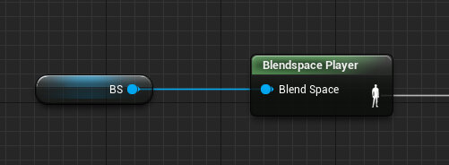

About cache blend node
This node would always cache the input pose of last frame, and blend to new input pose when ToggleFlag is changed.

Why do we need this node?
If you are working on a real commercial UE4 project, you may want to reuse anim graph structure by changing playable assets of the anim nodes(eg. BlendSpace, Anim Sequence, Evaluator, and etc. ) during runtime:

But here comes the problem:
Since those variables are changed in one single frame. Animation pose would change suddenly, thus we cannot get a nice transition:

This problem needs to be solved!
Development issues of this node
Random crash after caching input pose
In the very beginning, I use a FCompactPose class member to store input pose in the end of Evaluate_AnyThread function like this:
1 | SnapShotPose.CopyBonesFrom(Output.Pose); |
But the engine keeps crashing randomly – sometimes in render system, sometimes in slate viewer. It seems that the memory is broken.
After digging into FCompactPose structure, it seems that FCompactPose is allocated with a stack mem marker:
1 | struct ENGINE_API FCompactPose : public FBaseCompactPose<FAnimStackAllocator> |
Thus it is fine to create a FCompactPose inside an evaluation function. But it is not okay to make it a class member.
As a result, I use TArray<FTransform> to cache input pose. A FCompactPose would be created from this array during Evaluate_AnyThread function. Then we can use FAnimationRuntime::BlendPosesTogether to perform blend.
Issues about FAnimationRuntime::BlendPosesTogether
Since UE4 have already got its own blend pose function, it might be better to use it (Fine, I am simply much too lazy to write another function).
FAnimationRuntime::BlendPosesTogether accepts a pose array, a curve array and a weight array to give a valid pose and animation curves:
1 | void FAnimationRuntime::BlendPosesTogether( |
And we need make sure that you have the input pose the first element. And here is why:
In BlendCurves function, the output curve would firstly initfrom the first curve element:
1 | void InitFrom(const FBaseBlendedCurve<OtherAllocator>& InCurveToInitFrom) |
UIDToArrayIndexLUT is a TArray<uint16> const * pointer, thus this function performs a shallow copy.
Thus we cannot make our newly-created the first element, otherwise a pointer error would occur and drives you mad.
Yet another way
There is yet another way to solve this problem. We can directly modify AssetPlayer Node to perform cross-fade between old asset and new asset when the asset has been changed. In short, cache old asset value, and blend between old&new asset with the same time accumulator.
Method comparison
Multiple Transition
Cache Pose can handle multiple transition since we always blend from current pose to target pose – No matter what the target pose is.
Cache Asset cannot handle multiple transition, unless you store multiple asset, and evaluate&blend between them, which cause performance issue.
Performance
Cache Pose surely has better performance, since we do not need to evaluate old assets.
Maintainability
Cache Pose has better maintainability, since it has been decoupled with any asset player node, whereas Cache Asset requires modification to official animation node.
Usability
Cache Pose can be placed anywhere, but Cache Asset can only works with asset player node.
Animation Detail
Cache Asset can provide better animation detail, since both old and new animation are still running. But Cache Pose can only provide a single pose, which lacks some detail.